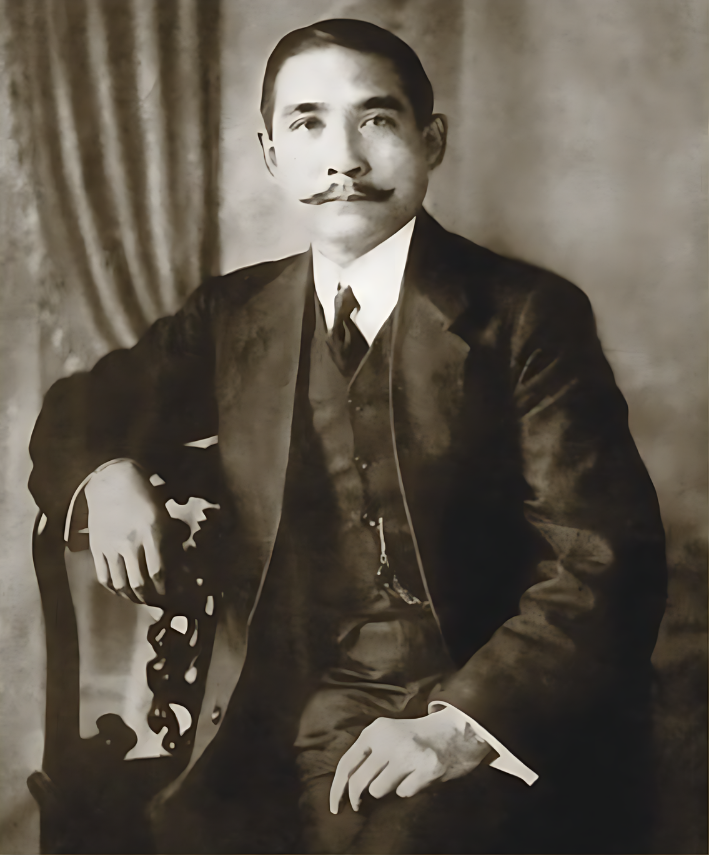
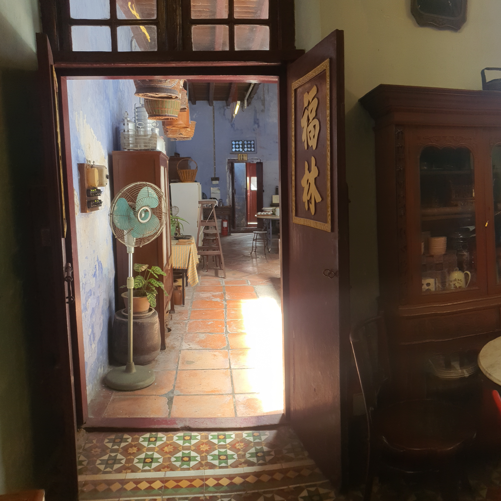
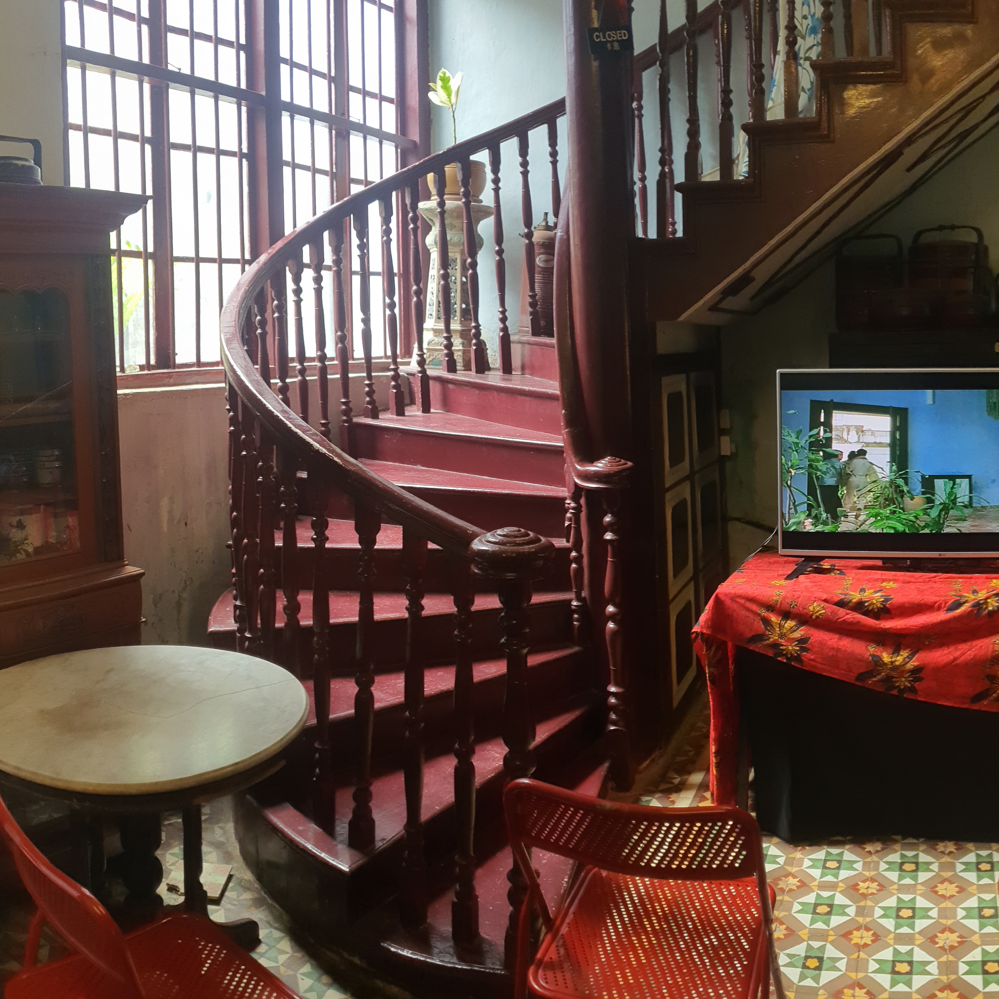
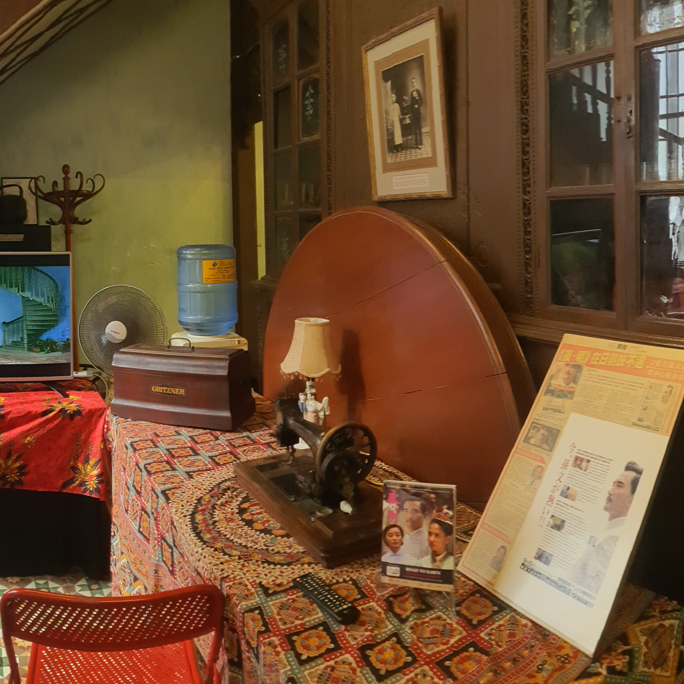
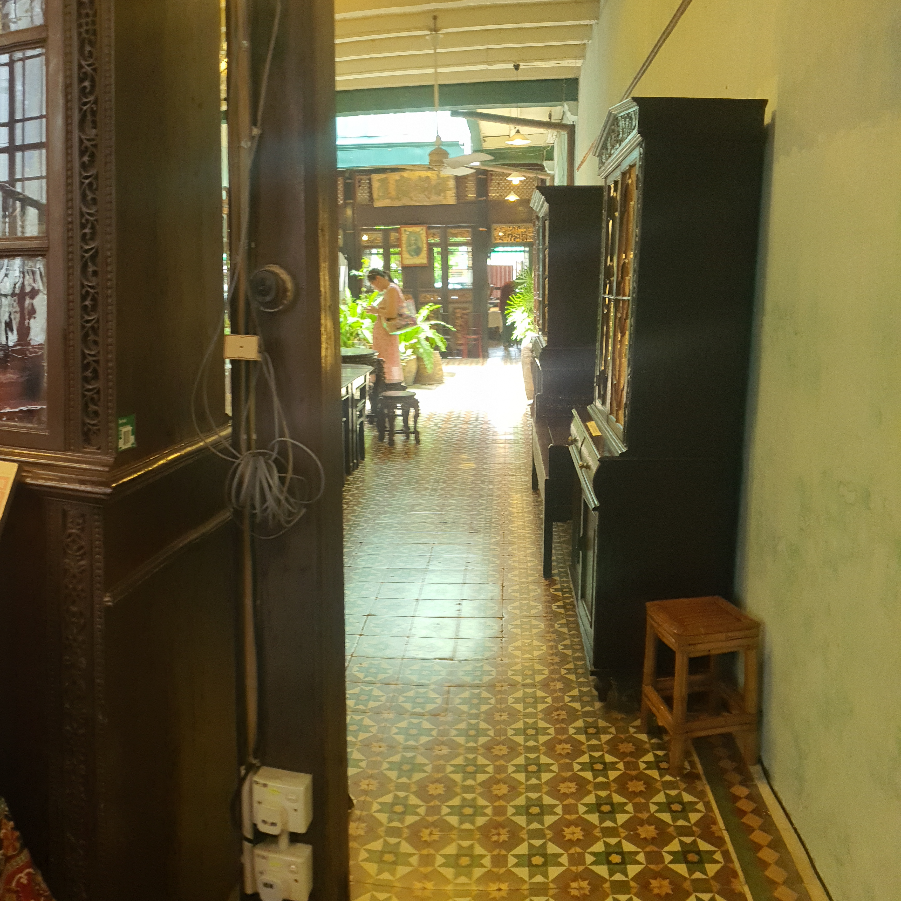
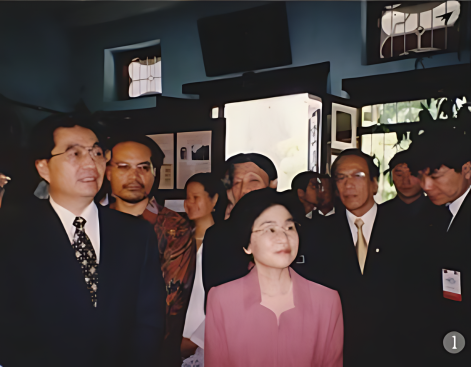
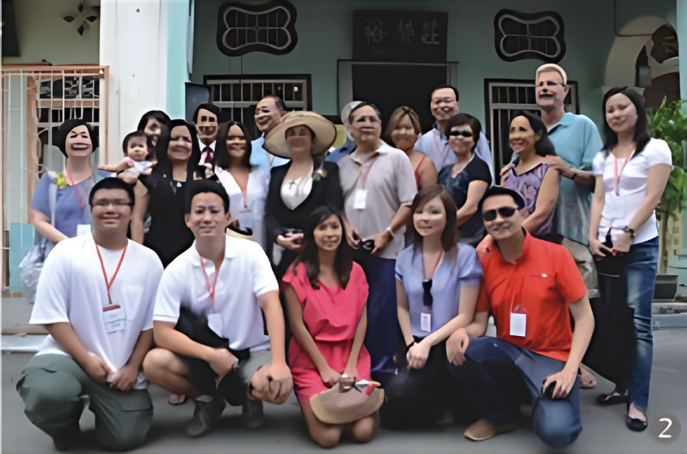

A Link To World History
The historic city of George Town has been listed as a
world heritage site by UNESCO for its architectural
heritage and townscape, cultural diversity and
multilayered history, its living heritage communities
and intangible heritage. Immerse yourself in our
shared past. Discover how this important house pre-
eminently connects global and local history.
A permanent exhibition and guided tour offer a
window onto the extraordinary history of the house.
In 1910 Sun Yat Sen (1866-1925) moved the Southeast
Asian headquarters of the Tongmenghui party to
Penang because he found renewed support among the
Overseas Chinese here for the overthrow of China's
Qing dynasty. In the same year, when Sun Yat Sen
lived in Penang with his family for over four months,
the house at 120 Armenian Street was where:
- The Penang Philomatic Union - a reading club - was based, providing a cover for the Sun's political party.
- The world's oldest Chinese newspaper Kwong Wah Yit Poh was founded by Sun Yat Sen in 1910.
- Sun Yat Sen convened the celebrated Penang Conference and delivered his famous speech to plan the Huanghuagang Uprising, an important milestone leading to the Chinese revolution of 1911.




A Nanyang Architectural Gem
Built around 1880 as a residential
townhouse, the building is a very
fine example of a Straits
Settlements merchant's home.
Unusually long at over 130 feet
(40 metres) it retains many of its
original features - an intimate
courtyard garden, a handsome
timber staircase, geometric floor
tiles, and large beams spanning
lime plaster walls. The interior
displays original blackwood
Straits Chinese furniture and
ornately carved wooden screens.
The old-fashioned Nyonya kitchen
preserves the original firewood stove
and kitchen utensils.
From 1926 the house was owned by
a Hokkien merchant, Ch'ng Teong
Swee. His granddaughter, the writer
and heritage advocate, Khoo Salma
Nasution, is custodian of the house
today. In 2010-11 the house
underwent extensive renovation to
its façade and roof, drawing on the
time-honoured skills of craftsmen
from Quanzhou, southern China.
Want to check out the new look?

Famous International Visitors
The Sun Yat Sen Penang Base was
the first Sun Yat Sen museum in
Malaysia, launched by first former
Malaysian prime minister Dr
Mahathir Mohamad in 2001. The
following year, it was the first Sun
Yat Sen museum in southeast Asia
officially visited by President Hu
Jintao (then vice-president), (1)
followed by other China officials
such as the chair of the National
Peoples' Congress, Wu Bangguo,
Other notable visits:
- The Penang reunion of 29 Sun clan members (2) (directly descended from Sun Yat Sen and his brother Sun Mei) from all over the world.
- Famous people in the arts - Peter Carey, Gurmit Singh and Petrina Fung Bo Bo
- Filming location of the award-winning Chinese film Road To Dawn (2007), starring Winston Zhao and based on the story of Sun Yat Sen's revolutionary period in Penang.
